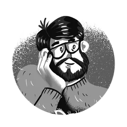
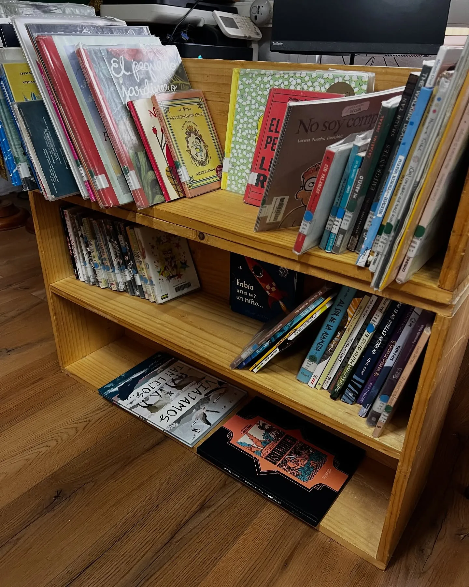
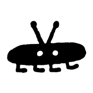
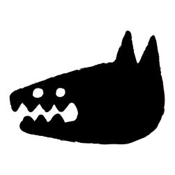
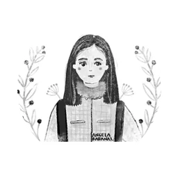
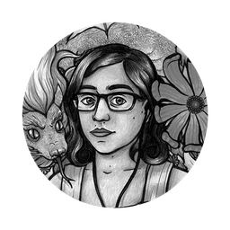
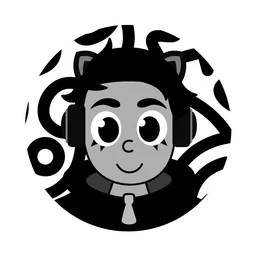

Hans Peralta
Presidente
- Ilustrador
- Arquitecto
- Diplomado en nuevas prácticas lectoras
- Diplomado en Gestión en Patrimonio Cultural, especialidad Didáctica del Patrimonio.
Somos un laboratorio creativo que explora nuevas formas de leer, contar y compartir historias. Experimentamos con medios, formatos y espacios que reencuentren a las personas con la lectura, no como deber, sino como posibilidad transformadora.
Sin abandonar el libro como objeto de inicio, nos aventuramos más allá del papel: llevamos las narrativas al territorio, al cuerpo, a lo colectivo. Creemos que leer puede ser un acto inmediato de cambio en nuestras realidades.


Creemos en los libros que se miran, se tocan y se sienten. En las historias que habitan dibujos, en las palabras que provocan mundos. En Ansiosxs Nuevas Lecturas nos dedicamos a sembrar curiosidad y afecto lector en todas las edades, especialmente en quienes rara vez son invitadxs a leer.
Llevamos cómics, cuentos y novelas ilustradas a plazas, escuelas rurales, ferias y encuentros comunitarios. A través del arte, el juego y la conversación, abrimos espacios para imaginar juntos otras formas de vivir, sentir y narrar.
Soñamos con comunidades lectoras que valoren la diversidad de voces, estilos y formatos. Queremos un futuro lleno de lectores que se atrevan a crear, compartir y transformar. Un futuro donde leer sea también un acto de encuentro, memoria y ternura.

Personas apasionadas por el arte, la educación y la transformación social.

Presidente

Secretaria

Encargada de voluntariado

Tesorero